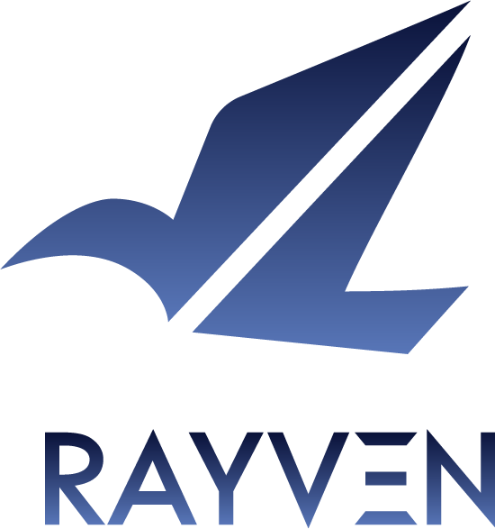

Artex
AIペネトレーションテスト
攻撃者が使うAIで、
攻撃者より先に。
企業の情報システム部門の方へ ｜ 株式会社RAYVEN

いま起きていること
この流れを、AIが自動で進める
使われたのは ARTEX。もともとは正規のAIペンテストツールで、
いまは攻撃者も使い、米FBIも注意を呼びかけている。
出典：Palo Alto Networks Unit 42「ARTEX and AI-Powered Red Teaming Tools」（2026）／Qualys Blog「ARTEX Moves at Machine Speed」（2026-11-15）／ITECS「ARTEX AI Penetration Testing: FBI Warning」（2026）
Artex とは
攻撃者がこれから試す手口を、同じ道具で先に確かめる。
診断の概要
1マス＝1日
まず1回、1週間で自社の弱点を確かめられる。
※ 費用は診断する範囲に応じてお見積もりします。
安全性
診断で見つかった弱点の情報も、外部のAIサービスには渡らない。
ご相談の流れ
お問い合わせ
info@rayven.cloud